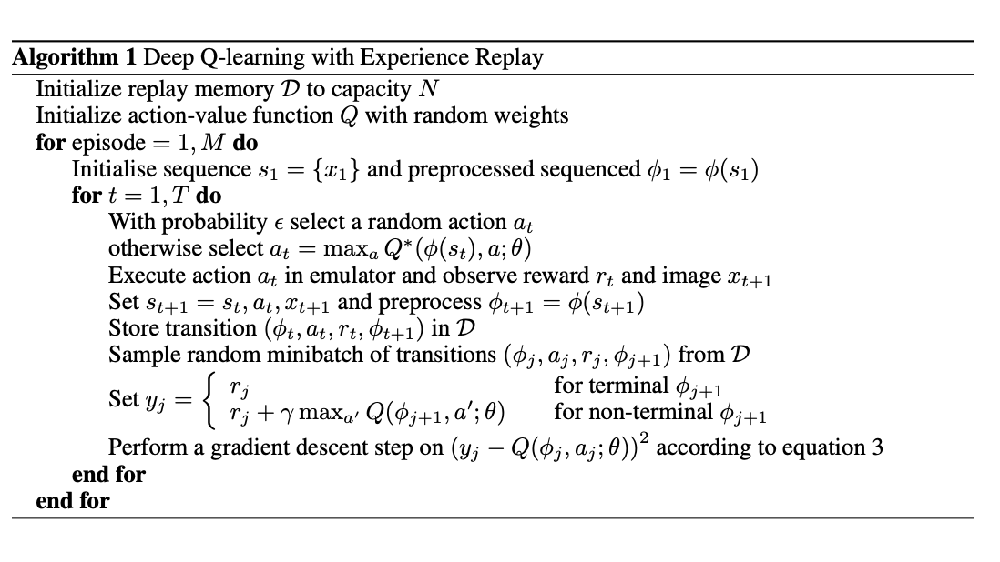
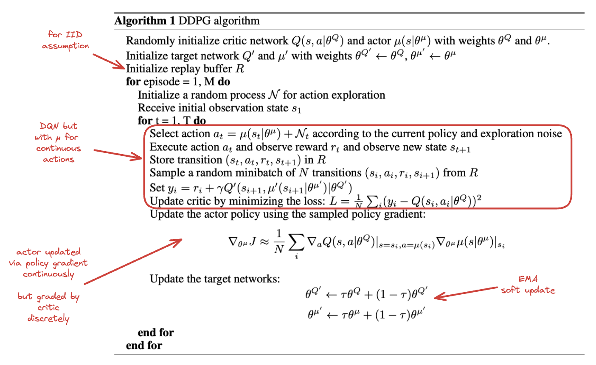
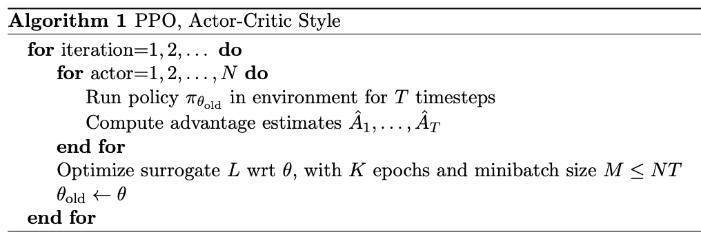
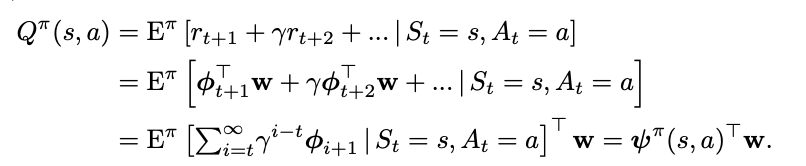
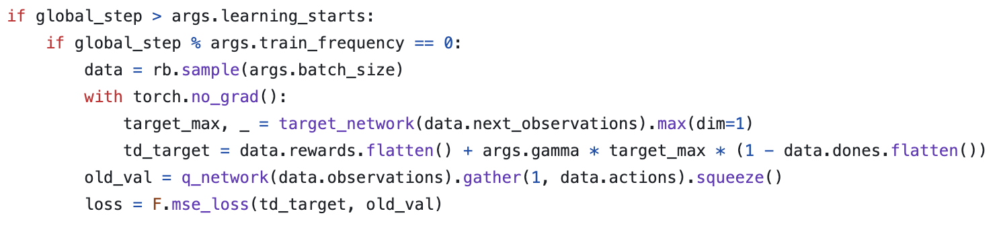
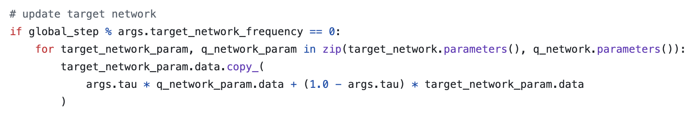

Table of Contents
Deep RL Notes
I have managed to complete Sutton and Barto's Reinforcement Learning. I would like to now learn enough deep reinforcement learning to do some useful, novel things with it.
A natural extension step here is OpenAI's Spinning Up in Deep Reinforcement Learning from 2020. This is mostly review for me except for the important subsection Key Papers in Deep RL which contains roughly 100 papers in deep RL. Likewise, there's a nice library called CleanRL which contains single-file, minimal implementations of popular deep RL algorithms for pedagogy.
This page is going to contain two things. It will contain notes on code, and notes on papers. These won't necessarily be from the 100 papers in spinning up / from cleanRL, but a lot of them will be. I'll be reading these with varying level of depth spent on each papers, which I will note how closely I've read each paper.
I'm going to try to read at least a couple papers each day in deep RL.
Papers
Playing Atari with Deep Reinforcement Learning (DQN)
Original DQN paper from 2013, very short (there's a longer Nature version which was released later)
Notable about this paper is the fact that all the games are deterministic, so they can formalize an MDP by having the state be the complete list of observations+actions starting from the starting state. I think this is kind of silly, since there are sure to be duplicate states this way, and it throws away most of the point of the markov property, but I guess to theoretically justify making it work for RL it's fine, it's mostly just for completeness.

Basically, generate a bunch of episodes and store memories of all your states, and rather than updating your single episode just update on a random minibatch drawn from the states in your dataset.
The claim here is that nonlinear function-approximation Q-learning is likely to diverge because of correlations between consecutive states, and that doing random updates on the last N states is likely to smooth this out and make it work again. In a sense the "Actual Contribution" of this paper is Experience Replay, the rest is just engineering details like using a CNN to understand the frame / using frame skip to make episodes shorter / doing mostly standard Q learning.
Asynchronous Methods for Deep Reinforcement Learning (A3C)
found here, from 2016.
The core insight in this paper seems to be this idea of replacing experience replay with multi-threaded episodes running in parallel. This means that the updates are sort of pseudorandom still, since it's likely that multiple agents running async will be in different spots of the environment at any given time.
The main advantage of doing this is that now we can stablize on-policy methods! Since before off-policy was the only type that would work with experience replay, and without experience replay it was unlikely to be stable with deep methods. The asynchrony is sort of like a faux experience replay since you get updates all over the state space from the multiple runs, but you get to stay on-policy.
The asynchronous advantage actor-critic (A3C) algorithm in this paper maintains a policy and a value estimation function (as is done in actor-critic), and updates based on \(\nabla_{\theta^{'}} log \pi(a_t|s_t, \theta') A(s_t, a_t; \theta, \theta_v)\) where A is the advantage function \(A(s_t, a_t; \theta, \theta_v) = \sum_{i=0}^{k-1}\gamma^i r_{t+i} + \gamma^kV(s_{t+k}; \theta_v) - V(s_t; \theta_v)\).
Running this does much better than DQN on atari, ~6x better and ~20x faster to reach DQN performance.
Continuous Control with Deep Reinforcement Learning (DDPG)
A notable limitation with DQN is low-dim and discrete action spaces – it will fail if either of those is changed.
This paper introduces Deep Deterministic Policy Gradient (DDPG) which adds the experience replay / target network stuff from DQN (along with batch norm) to DPG. It also introduced the "soft update" for the target network, which updates the weights via exponential moving average rather than all at once.

The core thing here is using actor-critic to extend DQN to continuous action spaces. The DQN algorithm relies on being able to calculate \(\gamma max_a Q(S_{t+1}, a)\) which cannot be performed if there are an infinite number of actions available. However, the actor-critic formulation takes care of both of these, so it's a fairly natural extension.
They show it working well on a bunch of mujoco environments.
Proximal Policy Optimization Algorithms (PPO)
Paper here. You could call this, vaguely, sota for deep RL algorithms; it's what was used for stuff like OpenAI Five, it's extremely powerful.
The actual PPO algorithm is super simple:

The important things here are the surrograte objective and the advantage estimates. For the former, the one that matters most is the clipped surrogate objective, which takes the following form:
\(L^{CLIP}(\theta) = \hat{\mathbb{E}}_t [min(r_t(\theta)\hat{A}_t, clip(r_t, 1-\epsilon, 1+\epsilon) \hat{A}_t)]\)
Where \(r_t\) is the probability ratio \(\frac{\pi_\theta(a_t | s_t)}{\pi_{\theta_{old}}(a_t | s_t)}\).
The first term of this clipped objective is the same objective as Trust Region Policy Optimization. The intuition behind this that we have a metric for how much better or worse than expected our action was (the advantage). We also have the old and new policy, and we can measure how much more or less likely either policy was to take that action. In short, if the action was better than expected, we want our new policy to take that action more than the old policy. If the action was worse than expected, we want our old policy to have taken that action more frequently than the new policy. In effect, maximizing this objective means that we directly try to make advantageous actions more likely under the new policy.
The second part of this clips the value of the probability ratio to be bounded within a specific range. The intuition behind this is that if we optimize the TRPO objective directly, we will want to make a huge update whenever there's a large advantage. But sometimes you'll just get that by chance, for example if the environment is stochastic. What we really want is to make steady changes to the policy to maximize the objective, and hope that through experience we can continue to improve it.
Then we take the minimum of this applied to the advantage function. The probability ratio is going to be positive (it's a ratio of probabilities), so basically this will clip the ratio to 1+ε if the advantage is positive, and clip the ratio to 1-ε if the advantage is negative. This lets us constrain to smaller updates, so that if we want to make big changes, we need to do it over multiple iterations through multiple experiences, rather than all at once (which could be unstable)
The other big component of this is the advantage estimates. This is done via a truncated Generalized Advantage Estimation (GAE), specifically:
\(\hat{A}_t = \delta_t + (\gamma\lambda)\delta_{t+1} + ... + (\gamma\lambda)^{T-t+1}\delta_{T-1}\)
Where \(\delta_t = r_t + \gamma V(s_{t+1}) - V(s_t)\)
Since it's an actor-critic method, we have the policy (actor) which makes all the moves, optimized via the surrogate objective, and we have a value model (critic) which is just trained to predict returns from each state (and therefore minimize \((V_\theta(s_t) - V_{target})^2\). In their case they put this all in one network with two heads, and use a combined loss function which optimizes both of these tasks at once.
Compared to other deep RL algorithms like DQN, A3C, DDPG, etc; PPO is a lot more engineerish. It's extremely simple algorithmically, and doesn't use anything like replay buffers, optimization constraints, replay buffers. It works on continuous and discrete action spaces, it's easy to work in with other networks, and it works super well. But, in exchange, it's on-policy, and the clipping is just something that seems to work rather than something with more concrete theoretical guarantees.
There are some other objectives explored in the paper here but the clipped one is the one which has remained the most important to my knowledge. As mentioned, this method solves DoTA, so you don't need too many other bells and whistles beyond this.
Successor Features for Transfer in Reinforcement Learning
Found here, from 2018.
This paper studies transfer between tasks in RL contexts.
The formulation here is really elegant. The basic idea is that we can create a model which will calculate expected reward on a task from features, i.e.
\(r(s, a, s') = \phi(s, a, s')^\intercal w\)
where \(\phi(s, a, s')\) describes features, and \(w\) represents weights which produce the reward given the features. This way, instead of writing Q(s,a) as the expected discounted sum of rewards, we can write it as the expected discounted sum of features, multiplied by the weights \(w\).

\(\psi^\pi(s,a)\) here is the expected discounted sum of features, which they call successor features.
How do we compute this? Well, we can use any RL method, since it can just be written as a bellman equation where we substitute \(\phi\) for rewards:
\(\psi^\pi(s,a) = \phi_{t+1} + \gamma E^\pi[\psi^\pi(S_{t+1}, \pi(S_{t+1})) | S_t = s, A_t = a]\)
WHY THIS IS USEFUL: because in cases where we keep everything the same EXCEPT the reward function, we can completely describe the difference between tasks as the difference in \(w\).
WHY THIS IS USEFUL 2: If you have a set of policies \(\pi_i\) and their successor features \(\psi^{\pi_i}\), if you're given a new task \(w_{i+1}\) then you can easily evaluate all the policies just by doing \(\psi^{\pi_i}(s,a)^\intercal w_{n+1}\). You can then do generalized policy improvement to construct a new policy based on the old policies (i.e. taking the best Q values for each) and derive a policy at least as good as the best policy you already have.
There's some additional guarantees here that if the distance between your new task \(w_i\) and the closest old task \(w_j\) is small, that you'll get a bounded error on the new task using this procedure.
Code
CleanRL dqnatari
code is here. This is a ~200 line implementation of the original DQN experiment, using convolutional nns etc.

learningstarts is an interesting detail here, I suppose to flood the replay buffer before starting to train. This targetmax * (1 - data.dones.flatten()) part is a one-liner which sets the terminal transition states to just be the reward, per algorithm 1 in the paper.
Likewise implementing this using a frozen "target network" and optimizing a separate "q network" is interesting. They seem to update this every 1000 steps or so, but it's a nice trick.

Specifically, they copy this over to the target network using this soft update mechanism where you essentially have the target network chase the current values of the Q network. I think this comes from the DDPG paper in 2016, which from a quick skim-through looks like it is intended to make divergence less likely. I'll give that a closer look when I get to that paper though.